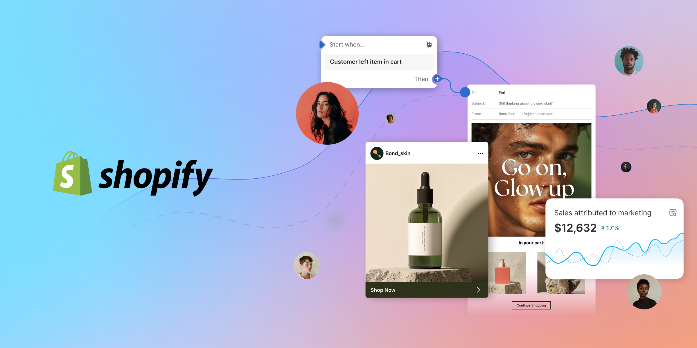

Introduction: Affordable Top Web Development in Seattle, Washington, USA, United States of America 2025
Seattle, Washington, is a burgeoning hub for technology and innovation in the United States. In 2025, businesses in the area seek affordable and top-notch web development services to stay competitive in the digital age. With an emphasis on quality, scalability, and user experience, Seattle-based web development companies are redefining what it means to offer cost-effective solutions. This blog explores the essential aspects of web development in Seattle, highlighting why it’s a prime location for affordable web development services without compromising quality.
Contact us to Low Budget, Small Cost, or Affordable Web Development in Seattle:
Why Seattle Is a Top Choice for Affordable Web Development

Seattle boasts a unique blend of technological innovation and competitive pricing, making it an ideal location for businesses seeking affordable web development. The city's thriving tech ecosystem, fueled by giants like Microsoft and Amazon, creates a pool of skilled developers offering services at diverse price points. Additionally, Seattle's supportive business environment encourages the growth of startups, ensuring competitive rates for web development services without compromising quality.
Contact us to Low Budget, Small Cost, or Affordable Web Development in Seattle:
Key Features of Affordable Web Development Services in Seattle
Affordable web development in Seattle focuses on high-quality features such as responsive design, SEO optimization, and seamless integration with third-party tools. These services emphasize user-centric designs, ensuring functionality across devices. Seattle developers excel in leveraging the latest technologies, including AI, for cost-effective yet cutting-edge solutions.
Top Web Development Companies in Seattle Offering Affordable Services

Several web development companies in Seattle are recognized for their affordable and reliable services. Firms like Seattle Web Design and Big Fish Digital specialize in creating custom websites tailored to various budgets. These companies provide exceptional value by combining local expertise with competitive pricing.
How Seattle-Based Developers Leverage Technology for Cost-Effectiveness
Seattle web developers utilize advanced technologies like AI-driven automation, headless CMS, and cloud computing to reduce costs while enhancing functionality. By adopting agile methodologies, they ensure efficient project completion, which translates to lower development costs without sacrificing quality.
Contact us to Low Budget, Small Cost, or Affordable Web Development in Seattle:
Customization Options Available in Affordable Web Development Packages
Seattle developers offer highly customizable web development packages. Whether it's an e-commerce platform or a corporate website, businesses can choose features that fit their needs and budgets. Popular options include custom themes, plugin integrations, and scalable architecture.
Importance of SEO in Affordable Web Development Services

Search Engine Optimization (SEO) is integral to affordable web development services in Seattle. Developers incorporate best practices such as fast-loading pages, mobile-first design, and structured data to ensure websites rank high on search engines, providing value without additional marketing expenses.
Role of UX/UI in Affordable Web Development in Seattle
Seattle-based web developers prioritize UX/UI design in their affordable packages. Intuitive navigation, visually appealing interfaces, and user-focused functionality are hallmarks of their work, ensuring that websites provide an excellent user experience while staying budget-friendly.
Contact us to Low Budget, Small Cost, or Affordable Web Development in Seattle:
Mobile-First Approach in Web Development
With mobile usage dominating internet traffic, Seattle developers prioritize mobile-first designs. Affordable web development firms in the city specialize in creating responsive, user-friendly websites optimized for smartphones and tablets, ensuring maximum engagement.
Affordable E-commerce Web Development Solutions in Seattle
For e-commerce businesses, Seattle offers affordable web development services specializing in creating feature-rich online stores. From secure payment gateways to inventory management systems, these solutions cater to all scales of e-commerce operations without exceeding budgets.
Emerging Trends in Seattle's Web Development Scene in 2025
Web development in Seattle in 2025 is marked by trends like progressive web apps, voice search optimization, and blockchain integration. These technologies are increasingly accessible to businesses due to the affordability and expertise of local developers.
Contact us to Low Budget, Small Cost, or Affordable Web Development in Seattle:
Affordable Web Maintenance and Support Services in Seattle
Seattle developers understand the importance of ongoing support, offering affordable maintenance packages. These services include regular updates, bug fixes, and performance monitoring, ensuring websites remain functional and secure over time.
Green Web Development: Sustainability Meets Affordability in Seattle

In 2025, sustainable web development practices are on the rise in Seattle. Affordable solutions include energy-efficient hosting and carbon-neutral development processes, aligning with the city’s eco-conscious ethos.
Cloud-Based Web Development Solutions in Seattle
Our Seattle’s based affordable web development services increasingly utilize cloud-based platforms, offering scalable, secure, and cost-effective solutions. Developers leverage tools like AWS and Microsoft Azure to build robust, flexible websites.
Contact us to Low Budget, Small Cost, or Affordable Web Development in Seattle:
Why Small Businesses in Seattle Prefer Local Web Developers
Small businesses in Seattle benefit from collaborating with local web developers due to their understanding of regional market dynamics. These developers provide affordable, tailored solutions that resonate with the local audience, driving growth for small enterprises.
Freelancers vs. Agencies: Finding Affordable Web Development in Seattle
Both freelancers and agencies offer affordable web development services in Seattle. While freelancers are ideal for smaller projects, agencies provide comprehensive solutions for more complex requirements. Each has its advantages depending on a business’s needs and budget.
Contact us to Low Budget, Small Cost, or Affordable Web Development in Seattle:
Tips for Finding the Best Affordable Web Development in Seattle
Businesses can find affordable web development in Seattle by researching online reviews, comparing portfolios, and requesting quotes. Networking with local businesses and attending Seattle tech meetups can also lead to reliable recommendations.
Web Development Seattle
Seattle is a hub for technology and innovation, making it an ideal location for web development. Local developers specialize in creating dynamic websites, apps, and platforms tailored to diverse industries, from startups to established businesses. With expertise in modern frameworks like React, Angular, and Node.js, Seattle's web developers prioritize user experience and functionality. Companies in Seattle emphasize responsive design, SEO optimization, and scalable solutions to ensure online success. Whether you need a custom e-commerce platform or a corporate website, Seattle’s web development community offers a range of services to support businesses in achieving their digital goals.
Contact us to Low Budget, Small Cost, or Affordable Web Development in Seattle:
Web Development Company Seattle

Seattle hosts numerous web development companies renowned for delivering high-quality digital solutions. These companies cater to diverse business needs, from designing custom websites to developing complex applications. Firms like these often offer end-to-end services, including UX/UI design, coding, and maintenance. Utilizing cutting-edge technologies, they ensure that websites are optimized for performance and user engagement. Many companies also provide consulting and branding services to enhance online presence. With a reputation for innovation and professionalism, Seattle-based web development companies are trusted by local businesses and global clients seeking effective and scalable web solutions.
Web Development Services Near Me
Looking for web development services nearby? Local web developers specialize in creating tailored websites and applications that meet specific business goals. Services include custom coding, e-commerce integration, mobile optimization, and SEO strategies to improve online visibility. By choosing a local provider, businesses benefit from personalized support, faster communication, and knowledge of the regional market. Whether you need a small business website or a robust enterprise solution, nearby web development experts offer quality services designed to enhance user experience and drive growth. Start your search today to find a trusted partner for your digital needs.
Contact us to Low Budget, Small Cost, or Affordable Web Development in Seattle:
Web Design Seattle
Seattle is a vibrant city with top-notch web design talent, making it a destination for businesses seeking exceptional digital experiences. Web designers in Seattle focus on creating visually appealing, user-friendly, and functional websites tailored to individual client needs. They employ the latest design trends, including minimalism, responsive layouts, and interactive elements, ensuring sites perform well across all devices. Seattle’s design scene is known for integrating creativity with technical expertise, offering a seamless blend of aesthetics and functionality. Whether you're launching a new website or revamping an existing one, Seattle's web design professionals deliver outstanding results.
Web Developer Salary Seattle
Web developers in Seattle enjoy competitive salaries due to the city's thriving tech industry. The average annual salary for a web developer in Seattle ranges from $70,000 to $120,000, depending on experience, skills, and the specific role. Developers with expertise in popular frameworks and technologies, such as JavaScript, Python, and cloud platforms, often command higher pay. Additionally, large tech companies and startups alike offer attractive benefits, making Seattle a desirable location for tech professionals. With opportunities for growth and high demand for talent, web development remains a lucrative career in Seattle’s robust tech ecosystem.
Contact us to Low Budget, Small Cost, or Affordable Web Development in Seattle:
Web Design Agency Seattle
Seattle is home to numerous web design agencies that cater to businesses of all sizes. These agencies specialize in crafting customized websites that align with brand identity and user expectations. Services include UX/UI design, mobile optimization, branding, and SEO integration. Seattle agencies pride themselves on their collaborative approach, working closely with clients to understand their goals and target audience. Many agencies also offer ongoing support and digital marketing services to enhance online performance. Whether you're a startup or a large enterprise, Seattle’s web design agencies deliver innovative solutions that make an impact.
Web Developer Seattle

Seattle’s web developers are highly skilled professionals who specialize in creating, maintaining, and enhancing websites and applications. They work with modern programming languages like JavaScript, Python, and PHP to build robust digital solutions. Web developers in Seattle serve industries ranging from tech and e-commerce to healthcare and education, ensuring customized approaches for diverse needs. With expertise in responsive design and performance optimization, these developers help businesses establish a strong online presence. Whether freelance or part of a development team, Seattle’s web developers are known for their technical prowess and commitment to excellence.
Contact us to Low Budget, Small Cost, or Affordable Web Development in Seattle:
Seattle Web Design
Seattle web design is characterized by its innovation and user-focused approach. Designers in this region blend creativity with cutting-edge technology to deliver visually stunning and highly functional websites. From startups to Fortune 500 companies, businesses in Seattle benefit from expert services like responsive design, UX optimization, and branding. Many local firms incorporate sustainable practices, reflecting Seattle’s environmentally conscious ethos. With a focus on client collaboration, Seattle web design professionals ensure projects align with business goals. This dynamic industry contributes to the city’s reputation as a leader in digital innovation and design excellence.
Seattle Web Design Agency
Seattle’s web design agencies are leaders in delivering customized, creative, and effective digital solutions. They focus on building websites that enhance user engagement and align with business objectives. Services include responsive design, SEO optimization, UX/UI enhancements, and branding. Many agencies also offer digital marketing and e-commerce solutions to boost online visibility. By leveraging the latest technologies and design trends, Seattle agencies help businesses stand out in a competitive market. Known for their professionalism and innovation, these agencies are trusted partners for companies seeking to establish or elevate their digital presence.
Contact us to Low Budget, Small Cost, or Affordable Web Development in Seattle:
B2B Web Development
B2B web development focuses on creating robust online platforms for business-to-business interactions. These solutions prioritize functionality, scalability, and user experience, ensuring seamless transactions between companies. Features often include secure portals, data integrations, and analytics tools to support decision-making. B2B developers emphasize responsive design and performance optimization to handle high traffic and complex operations. Industries such as manufacturing, logistics, and software heavily rely on B2B web development for efficient operations. By partnering with expert developers, businesses can streamline processes, improve client engagement, and drive growth through innovative digital solutions.
Web Design Company Seattle
Web design companies in Seattle are known for their innovation and client-focused services. They offer custom web solutions tailored to meet the unique needs of businesses across various industries. From responsive websites to e-commerce platforms, these companies deliver projects that combine aesthetics with functionality. Services include UX/UI design, branding, SEO optimization, and content management system (CMS) integration. Seattle-based web design firms are well-versed in the latest design trends and technologies, ensuring that websites not only look great but also perform effectively. Their expertise helps businesses establish a compelling online presence.
Contact us to Low Budget, Small Cost, or Affordable Web Development in Seattle:
Downtown Seattle Development

Downtown Seattle is undergoing rapid development, with a focus on creating a vibrant, sustainable urban environment. Projects include residential high-rises, mixed-use spaces, and commercial buildings designed to support the city’s growing population and economic needs. The area is also seeing improvements in public transportation and green spaces, enhancing livability and accessibility. Developers prioritize environmentally friendly practices, incorporating energy-efficient designs and renewable materials. With tech companies expanding their presence and new businesses emerging, downtown Seattle continues to attract investment. This dynamic growth reflects Seattle’s status as a thriving and innovative metropolitan hub.
Front-End Developer Seattle
Front-end developers in Seattle specialize in creating visually appealing and user-friendly interfaces for websites and applications. They utilize languages like HTML, CSS, and JavaScript, along with frameworks such as React and Angular, to deliver engaging user experiences. Many Seattle-based front-end developers work on responsive designs, ensuring optimal performance across devices. With Seattle’s strong tech presence, professionals in this field collaborate with diverse industries, from tech startups to retail. Their focus on modern design trends and interactive elements helps businesses captivate their audiences and enhance digital interactions.
Contact us to Low Budget, Small Cost, or Affordable Web Development in Seattle:
Full-Stack Developer Seattle
Full-stack developers in Seattle offer expertise in both front-end and back-end development, enabling them to build complete, robust web solutions. Skilled in frameworks like Node.js, Django, and React, these professionals manage everything from server-side logic to user interface design. Seattle’s full-stack developers are in high demand, serving industries such as e-commerce, healthcare, and technology. Their ability to integrate databases, APIs, and scalable architectures ensures seamless performance and functionality. By partnering with a full-stack developer, businesses in Seattle can streamline development processes and achieve cost-effective, comprehensive digital solutions.
Seattle Web Developer
Seattle Web Developer: Seattle is home to a thriving community of web developers known for delivering high-quality, customized web solutions. These professionals excel in creating responsive websites, web applications, and e-commerce platforms. Utilizing modern frameworks and technologies, Seattle web developers focus on performance, security, and user experience. Their expertise spans various industries, allowing them to cater to unique client needs. With Seattle's reputation as a tech hub, web developers here are well-versed in innovative practices, helping businesses enhance their online presence and achieve digital success.
Contact us to Low Budget, Small Cost, or Affordable Web Development in Seattle:
Web Developer in Seattle WA
Web developers in Seattle, WA, are highly skilled professionals offering a range of services to meet modern digital demands. From creating static websites to complex applications, they use technologies like JavaScript, Python, and PHP to build scalable solutions. Many developers focus on responsive design, SEO optimization, and site performance to ensure a seamless user experience. Seattle’s web developers serve local businesses, startups, and global enterprises, contributing to the city’s innovative tech ecosystem. Their dedication to excellence makes them valuable partners for businesses aiming to thrive online.
Web Design in Seattle
Seattle’s web design industry is known for its creativity and innovation. Designers focus on creating responsive, visually appealing, and user-friendly websites tailored to client goals. From small business sites to large-scale projects, Seattle-based designers combine aesthetics with functionality. Services include UX/UI design, branding, and mobile optimization, ensuring websites meet modern standards. With a collaborative approach and an emphasis on the latest trends, Seattle web designers help businesses stand out in competitive markets. Whether for startups or established companies, web design in Seattle delivers impactful digital experiences.
Contact us to Low Budget, Small Cost, or Affordable Web Development in Seattle:
Web Developer in Seattle
Web Developer in Seattle are at the forefront of creating dynamic and functional digital solutions. They specialize in coding websites and applications, ensuring they are user-friendly, secure, and optimized for performance. With expertise in modern frameworks like React, Vue.js, and Laravel, these developers cater to various industries, from tech and retail to education and healthcare. Known for their problem-solving skills and innovative approach, Seattle’s web developers play a crucial role in helping businesses establish and maintain a strong online presence.
Website Design in Seattle
Seattle is a hub for top-notch website design services, catering to businesses of all sizes. Local designers specialize in creating responsive, SEO-friendly, and visually stunning websites that align with brand goals. Whether you need an e-commerce platform or a corporate website, Seattle’s designers integrate modern tools and trends to enhance user experience. Services often include UX/UI enhancements, branding, and mobile optimization. With a strong focus on aesthetics and functionality, website design professionals in Seattle deliver tailored solutions that drive engagement and growth.
Contact us to Low Budget, Small Cost, or Affordable Web Development in Seattle:
Web Development Company in Seattle
Web development companies in Seattle are renowned for their expertise in building custom digital solutions. These firms provide end-to-end services, including website creation, app development, and e-commerce integration. With a focus on responsive design and scalability, they cater to startups, small businesses, and large enterprises alike. Seattle-based companies prioritize client collaboration and cutting-edge technologies, ensuring projects align with business objectives. From local ventures to global brands, businesses trust Seattle web development companies for their professionalism and innovative approach.
Interactive Web Development
Interactive web development focuses on creating engaging, user-centered websites and applications that encourage interaction. Developers in Seattle specialize in building dynamic interfaces using technologies like JavaScript, WebGL, and CSS animations. These features enhance user experience and keep visitors engaged. Interactive elements such as quizzes, forms, and real-time updates are commonly used in e-commerce, education, and entertainment industries. Seattle’s tech-forward environment makes it an ideal location for businesses seeking innovative, interactive web solutions that captivate audiences and drive engagement.
Contact us to Low Budget, Small Cost, or Affordable Web Development in Seattle:
UW Web Development
The University of Washington (UW) offers robust web development programs that prepare students for careers in Seattle’s thriving tech industry. Courses cover a range of topics, including front-end design, back-end development, and modern frameworks like React and Django. UW’s programs emphasize hands-on learning, enabling students to build real-world projects and develop industry-relevant skills. Graduates often find opportunities in Seattle’s tech sector, working for startups, established companies, or as freelancers. With strong industry connections and a reputation for excellence, UW is a top choice for aspiring web developers.
Website Design Seattle WA
Seattle, WA, is home to exceptional website design services that combine creativity with technical expertise. Designers in the area focus on building responsive, user-friendly websites that align with brand identity and business goals. Services often include UX/UI design, SEO optimization, and e-commerce solutions. Whether for small businesses or large enterprises, Seattle’s website designers deliver customized solutions that enhance online presence and drive engagement. Their innovative approach ensures businesses can stand out in competitive digital markets while offering memorable user experiences.
Contact us to Low Budget, Small Cost, or Affordable Web Development in Seattle:
Website Development Seattle
Website development in Seattle is a dynamic industry, with professionals delivering cutting-edge solutions tailored to diverse business needs. Services range from creating simple websites to developing complex web applications using technologies like JavaScript, Python, and PHP. Seattle developers focus on functionality, scalability, and user experience, ensuring websites perform seamlessly across devices. Industries such as retail, healthcare, and technology rely on Seattle-based developers for innovative and reliable digital solutions. With a strong emphasis on collaboration and quality, website development in Seattle helps businesses achieve their online goals.
Affordable Web Development Seattle
In Seattle we offers affordable web development services tailored to businesses with tight budgets. Many local firms and freelancers provide high-quality, cost-effective solutions for startups, small businesses, and non-profits. These services often include responsive website design, e-commerce integration, and SEO optimization. By utilizing modern tools and streamlined processes, affordable web developers in Seattle ensure that businesses can achieve a professional online presence without exceeding their budget.
Contact us to Low Budget, Small Cost, or Affordable Web Development in Seattle:
Popular Web Development Company Seattle
Seattle is home to several popular web development companies known for their innovative and reliable services. These companies excel in creating custom websites, web apps, and e-commerce platforms. They often cater to diverse industries, including tech, healthcare, and retail. Renowned for their expertise and professionalism, Seattle’s web development companies are sought after by both local and global businesses for delivering modern, user-friendly digital solutions.
Discounted Web Development Services Near Me
Looking for discounted web development services in Seattle? Many local agencies and freelancers offer promotional packages and seasonal deals for website development, maintenance, and upgrades. These discounts cater to startups and small businesses seeking quality solutions on a budget. Services include custom website design, CMS development, and SEO optimization, ensuring affordability without compromising quality.
Contact us to Low Budget, Small Cost, or Affordable Web Development in Seattle:
Inexpensive Web Design Seattle
Inexpensive web design options in Seattle provide small businesses and startups with professional, affordable websites. Local designers use cost-efficient tools and templates to deliver visually appealing, user-friendly designs. Services often include responsive layouts, basic SEO, and branding elements. Seattle’s inexpensive web design services allow businesses to establish an online presence without overspending.
Low-Budget Web Developer Salary Seattle
The average salary for web developers in Seattle varies, but low-budget hiring options exist for startups and smaller businesses. Entry-level or freelance developers typically charge less, making them ideal for budget-conscious projects. Despite lower costs, many developers still provide reliable and modern web solutions, catering to local business needs effectively.
Contact us to Low Budget, Small Cost, or Affordable Web Development in Seattle:
Small-Cost Web Design Agency Seattle
Small-cost web design agencies in Seattle focus on delivering affordable yet impactful designs for businesses with limited budgets. These agencies specialize in responsive websites, branding, and basic functionality while keeping costs low. Their expertise allows businesses to maintain professionalism and quality within financial constraints.
Inexpensive Web Developer Seattle
Inexpensive web developers in Seattle provide budget-friendly services for businesses and individuals. These developers often work freelance or in smaller agencies, offering solutions like simple websites, custom plugins, or SEO-focused designs. Affordable doesn’t mean low-quality—Seattle’s inexpensive developers often leverage modern tools to ensure efficiency and effectiveness.
Contact us to Low Budget, Small Cost, or Affordable Web Development in Seattle:
Reasonable Seattle Web Design
Reasonable web design services in Seattle offer quality solutions at fair prices. These services cater to businesses looking for professional yet cost-efficient websites. With a focus on clean layouts, responsive design, and SEO, reasonable web designers ensure clients achieve excellent results without overpaying.
Cheap Seattle Web Design Agency
For businesses seeking affordable options, cheap web design agencies in Seattle provide budget-friendly services. These agencies use pre-designed templates and streamlined processes to reduce costs while maintaining professional standards. Ideal for startups, these agencies deliver functional and visually appealing websites at competitive rates.
Contact us to Low Budget, Small Cost, or Affordable Web Development in Seattle:
Budgeted B2B Web Development
Budgeted B2B web development in Seattle focuses on creating cost-effective digital solutions for business-to-business services. Developers offer affordable platforms tailored to industry needs, incorporating features like lead generation forms, client portals, and streamlined workflows. Seattle’s budget-friendly options ensure businesses get the tools they need without excessive spending.
Modern Web Design Company Seattle
Modern web design companies in Seattle blend creativity and technology to deliver cutting-edge solutions. These firms prioritize responsive design, intuitive user interfaces, and seamless functionality. Known for innovative approaches, they cater to diverse industries while keeping up with evolving trends in web design.
Contact us to Low Budget, Small Cost, or Affordable Web Development in Seattle:
Famous Downtown Seattle Development
Downtown Seattle boasts a variety of famous developments, including commercial hubs, tech offices, and retail spaces. The area is a vibrant mix of modern architecture and innovative urban design. With iconic landmarks and a thriving tech ecosystem, downtown Seattle remains a focal point for business and culture.
Renowned Front-End Developer Seattle
Renowned front-end developers in Seattle are recognized for crafting visually stunning and user-friendly interfaces. These experts specialize in HTML, CSS, and JavaScript, ensuring seamless functionality across devices. Their innovative designs cater to businesses aiming to enhance user engagement and brand presence.
Contact us to Low Budget, Small Cost, or Affordable Web Development in Seattle:
Favorite Full-Stack Developer Seattle
Seattle’s favorite full-stack developers are valued for their expertise in creating comprehensive digital solutions. Proficient in both front-end and back-end development, they deliver scalable websites and applications. Businesses in Seattle rely on their skills for efficient, all-encompassing web projects.
Fabulous Seattle Web Developer
Fabulous web developers in Seattle stand out for their creativity and technical prowess. They deliver dynamic, functional, and aesthetically pleasing websites tailored to unique client needs. Known for reliability and innovation, these developers are highly sought after in the local tech scene.
Contact us to Low Budget, Small Cost, or Affordable Web Development in Seattle:
Top Web Developer in Seattle WA
Top web developers in Seattle, WA, are distinguished for their technical skills and innovative approaches. They specialize in delivering tailored solutions for businesses, from startups to enterprises. With expertise in cutting-edge tools and frameworks, they ensure seamless and efficient digital experiences.
Best Web Design in Seattle
The best web design services in Seattle are known for their quality, innovation, and client-focused approach. Designers create responsive, visually appealing websites that reflect brand identity while enhancing user experience. Their ability to combine aesthetics with functionality sets them apart in the competitive web design market.
Contact us to Low Budget, Small Cost, or Affordable Web Development in Seattle:
Popularized Web Developer in Seattle
Popularized web developers in Seattle have earned recognition for their exceptional skills and creative solutions. They cater to various industries, building custom websites and applications. These developers are celebrated for their ability to bring innovative ideas to life and enhance online presence effectively.
Conclusion:
We providing Seattle’s based web development services from 15+ Years We offers a perfect balance of affordability and excellence. Whether you’re a small business or a large corporation, the city’s developers provide solutions tailored to your needs without exceeding your budget. Embracing Seattle’s web development opportunities ensures your business stays competitive in an ever-evolving digital landscape.